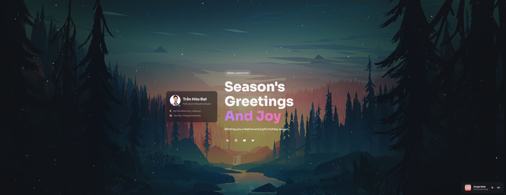

Là một sinh viên Kỹ thuật phần mềm tại TDTU, mình luôn muốn có một nơi "chính chủ" để lưu trữ các dự án. Nhiều người hỏi tại sao mình không dùng React, Vue hay Next.js cho "xịn xò"? Bài viết này sẽ là câu trả lời thành thật nhất về quá trình mình xây dựng trang web này từ con số 0.
 Giao diện chính của trang web với phong cách Glassmorphism.
Giao diện chính của trang web với phong cách Glassmorphism.
1. Lời thú tội: Sao không dùng React?
Thú thật thì... React khó! 😅
Mình biết React đang là xu hướng, nhưng với một người đang trong giai đoạn củng cố nền tảng như mình,
việc nhảy vào học cú pháp JSX, quản lý State, hay vật lộn với useEffect ngay lập tức thực sự khá "ngộp".
Mình quyết định quay về với HTML, CSS và JavaScript thuần. Không phải vì mình "chê" Framework, mà vì mình muốn hiểu rõ bản chất của DOM, cách CSS hoạt động trước khi để một thư viện làm hộ mình mọi thứ. Và quan trọng nhất: Code thuần chạy được ngay, dễ sửa, dễ hiểu với những gì mình đang có.
2. GitHub Pages & Sự đơn giản
Lý do thứ hai thực tế hơn nhiều: GitHub Pages.
Mình muốn deploy trang web một cách nhanh nhất, miễn phí và ít lỗi nhất.
Với HTML/CSS tĩnh, mình chỉ cần đẩy code lên GitHub, bật Pages trong setting là xong.
Không cần cấu hình npm run build, không lo lỗi Routing khi deploy lên thư mục con, không cần setup quy trình CI/CD phức tạp.
Đơn giản là tốt nhất (Simple is the best) - ít nhất là cho portfolio đầu tay này.
3. Thiết kế: Glassmorphism & Dark Mode
Dù code đơn giản nhưng giao diện thì không được sơ sài. Mình chọn phong cách Glassmorphism (hiệu ứng kính mờ).
Class .glass-card với thuộc tính backdrop-filter: blur() được sử dụng khắp nơi để tạo cảm giác hiện đại.
Và tất nhiên, Dark Mode là bắt buộc. Mình sử dụng CSS Variables để quản lý màu sắc, giúp việc chuyển đổi theme cực kỳ mượt mà.
4. Các tính năng thú vị
Để bù đắp cho việc không dùng Framework, mình đã tự tay code những tính năng nhỏ nhưng "có võ":
Music Player Widget 🎵
Mình tích hợp trình phát nhạc sử dụng thẻ <audio> và JS thuần.
Logic xử lý Next/Prev bài hát hay thanh tiến trình (progress bar) đều được viết tay hoàn toàn.
Hệ thống Theme theo mùa ❄️🎃
Nếu bạn để ý dưới Footer có nút Themes. Mình cấu trúc CSS để có thể thay đổi không khí trang web chỉ bằng việc load file CSS khác nhau. Noel thì có tuyết rơi, Tết thì có hoa mai... tất cả đều là CSS Animation thuần, không cần thư viện nặng nề nào cả.

Phiên bản Noel với hiệu ứng tuyết rơi (CSS Animation).5. Tổng kết
Portfolio này là minh chứng cho việc bạn không cần công nghệ cao siêu để tạo ra một sản phẩm hoàn chỉnh. Nó chưa hoàn hảo, code có thể chưa tối ưu nhất, nhưng nó là sản phẩm mình tự hào vì mình hiểu từng dòng code trong đó.
Cảm ơn bạn đã ghé thăm "khu vườn số" của mình. Hẹn gặp lại ở các dự án React (khi mình đã học xong)! 👋